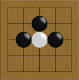
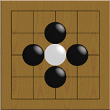
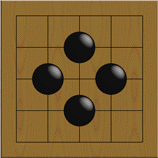
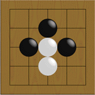

The goal of Go
The objective of Go is to make your "territory" larger than that of your opponent.
At first, you may be confused about where to place your stones because you can
play almost anywhere on the board.
One way to make territory is to "capture" opponent's stones.
Stones that are surrounded are removed from the board and are handed to the
opponent as prisoners.
Each prisoner will be worth one point.
How To Capture Stones

With one more move, the white stone will be completely surrounded and will be removed.
Stones that can be removed with one more move are said to be in "Atari".

The white stone is now surrounded. Therefore...
 ... it is removed from the board.
 If it were white's
turn, it could "escape" by connecting another stone.
 Next
Next
 Table Of Contents
Table Of Contents
 Home
Home